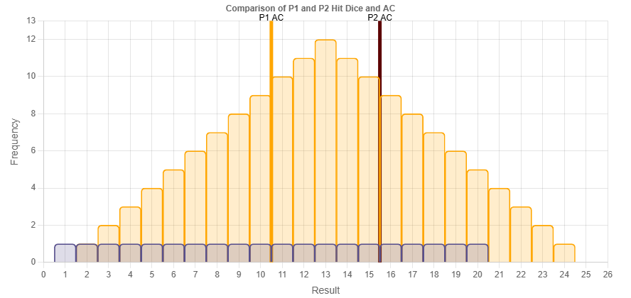
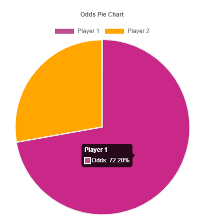

Dungeons and Dragons (DnD) is a popular tabletop roleplaying game (TTRPG) which often involves rolling dice in order to determine success or failure both in and outside of combat (referred to as encounters). Because of the complexity involved in those rolls, it is often difficult to determine whether or not an opponent would be easy or difficult without prior testing or a pre-existing knowledge of similar encounters. This calculator offloads that mental load of "feeling" the possible outcomes and presents them as a two charts with clear percentages a definitive statistic for success or failure.
For those unfamiliar with the mechanics and key terms of DnD, this section will lay them out:
(Traditionally the game is played with multiple players but for the example below it will only use one player and one enemy for the sake of simplicity)
A player and a goblin get into a fight. From the beginning, they both have certain stats that are independent from their opponent: Health, Armor Class, Hit Dice, and Damage Dice.
The player and goblin now fight by attcking each other. The player has a heavy hammer which would do a lot of damage but they're not very accurate with it. On the other hand, the goblin is small, nimble, and has a small knife which doesn't do much damage but is much easier to hit the player with. Let's see what their stats might look like for this example:
| Stats | Player | Goblin |
|---|---|---|
| HP | 20 | 5 |
| AC | 10 | 15 |
| Hit Dice | 1d20 | 2d12 |
| Damage Dice | 1d12 | 2d3 |
From just looking at the numbers it's hard to guess who would win. The player might get a lucky hit and defeat the goblin in a single hit while the goblin could be more likely to keep dodging and defeat the player through attrition. This is where the calculator comes in handy. By inputting the values above we get the following result:


With bar graph we're able to compare the dice rolls vs the AC for both the player and the goblin (Player 1 and Player 2 respectively) at the same time while the pie chart displays the odds of winning for both combatants. We see that the player has a lower AC so more of the goblins attacks are able to land. However, the pie chart shows that despite the gobin having higher accuracy, it is significantly less likely to defeat the player.
This shows how the encounter of a player against a single goblin would be a balanced encounter since the player would have a higher likelihood of winning the fight. Even when using stronger enemies this could be used to determine whether or not a Dungeon Master would want an encounter to be overhelmingly strong (where the players are supposed to lose) or just difficult.
As the initial version of this tool it does lack some granularity such as caclulating critical hits (which would add additional damage on a max hit roll) additional enemies, the number of rounds it would take to win for each side, and others. However, it does function in its current state and give a good visual which was the intented goal.